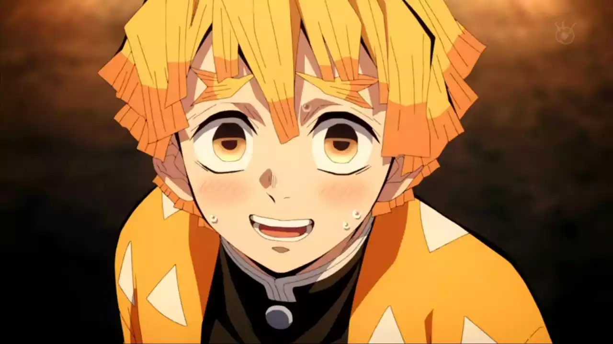

Albúm de figurinhas dos personagens de Kimetsu no Yaiba
Protagonista do anime Tanjiro Kamado vem de uma família simples, mas morta por um oni, ele e sua irmã são os únicos sobreviventes.Ele é conhecido por sua respiração da besta, suas maiores habilidades são a força, resistência, velocidade, e habilidade com armas, por isso usa duas katanas. O hashira da respiração da serpente, ele é exigente e severo, quase cego do olho direito sua força física não é tão alta, mas como treinou muito se tornou um oponente forte.É muito alegre e animado e muito inteligente, ele é o hashira das chamas, com sua katana consegue controlar cinco formas da respiração das chamas, e também uma nona forma que pode queimar tudo.É extremamente gentil e carinhoso e também está quase sempre chorando, é um espadachim muito habilidoso com as capacidades físicas extraordinárias, é o hashira da pedra.Eles são onis lua superior 6, que são a classe mais fraca de oni superior, a Daki tem poderes de obi que são faixas cor de rosa, e Gyutaro tem duas foices que lançam sangue em seus oponentes.Lua superior 3, é especializado em artes marciais utilizando suas técnicas de artes demoníacas de sangue para desferir golpes poderosos e contínuos.Irmã de Tanjiro, e sobrevivente de uma massacre de oni em sua família, mas não saiu ilesa, acabou se transformando em um oni também.Portador da respiração da água, é um dos hashiras mais poderosos pois suas habilidades são de alto níveis, é jovem, alto e sério, e tem senso de justiça muito forte.É uma garota muito doce e gentil e também amorosa, por isso é a hashira do amor, é extremamente forte fisicamente e poderosa, sua força de ataque, defesa e velocidade são sobre humanas. Personagem conhecido por ser extravagante, e excêntrico, mas também é carinhoso quando está com suas três esposas, por ser o hashira do som tem a audição aguçada e respiração sonora.Líder do Esquadrão de caçadores, é bastante calmo e cuidadoso, ele auxilia os hashiras com seu poder de previsões, essa habilidade permite que ele evite situações desastrosas. Oni lua superior 5 tem seu corpo dentro de um vaso, e olhos no queixo e testa, seu estilo de luta é bem incomum, ele pode se teletransportar entre os vasos, usando para prender suas vítimas.Lua superior 2 suas artes demoníacas de sangue envolvem o uso de gelo e frio, ele pode criar construções de gelo que lutam independentemente dele e usar todas as suas técnicas sem diminuição de poder. No início ele é muito chorão e medroso, mas ao passar da obra ele começa a se mostrar muito forte com sua respiração do trovão, mas também mais maduro.Hashira que possui a respiração do inseto, irmã da antiga hashira das flores, é a única que com sua katana consegue injetar veneno nos inimigos, e também tem conhecimentos medicinais.É o hashira da névoa, é conhecido por ser pensativo e fala pouco, ele domina completamente a respiração da névoa, seu poder tem seis formas, mas ele criou mais uma forma ficando assim sete formas.É conhecido por ser frio, instável, teimoso, é o hashira do vento em combate é um guerreiro muito habilidoso, ele é considerado o usuáio mais habilidoso de sua geração. É o chefe dos onis que são demônios que não podem sair no sol, e o criador desses onis é o próprio Muzan, além disso foi o primeiro demônio a existir na humanidade, por isso consegue criar outros onis. É o oni lua superior 4, apesar de parecer tímido e rastejar no chão, isso engana os inimigos, pois quando decapitado se divide em quatro personalidades, cada forma tem um nome e poder distinto.Lua superior 1, sendo o primeiro a se transformar em um demônio, Kokushibou combina seus poderes demoníacos com seu estilo de respiração, resultando em um combo mortal, Suas técnicas de respiração lunar são ampliadas pela sua força e velocidade demoníacas.